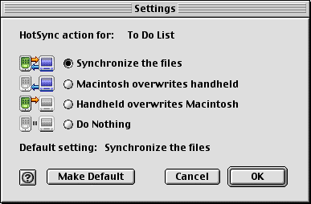

|
|
|
C/C++ Sync Suite Companion for Macintosh Palm OS® Conduit Development Kit for Macintosh, Version 4.03 |
This chapter describes how conduits interface with the HotSync® Manager application. There are two areas of interaction between a conduit and the HotSync Manager application: • The conduit entry points are functions that your conduit provides for the HotSync Manager application to call during synchronization operations. • Your conduit can call the HotSync log functions to add entries to the log that the user can view after synchronization operations are complete. The remainder of this chapter describes how to interface with the HotSync Manager application in these ways. The Conduit Entry PointsTable 7.1 shows a summary of the entry point functions. The remainder of this section provides a brief description of each function. For more information about these functions, see Chapter 1, "Conduit API," in the C/C++ Sync Suite Reference for Macintosh. NOTE: The source for the sample conduits provided by PalmSource, Inc. includes functions ConduitInit and ConduitExit. These functions are an implementation detail; they are called when the conduit is loaded and unloaded by the operating system to perform low-level setup and teardown of the conduit library. You shouldn't need to change either of these functions. NOTE: The source for the sample conduits provided by PalmSource, Inc. includes functions ConduitInit and ConduitExit. These functions are an implementation detail; they are called when the conduit is loaded and unloaded by the operating system to perform low-level setup and teardown of the conduit library. You shouldn't need to change either of these functions. ConfigureConduitThe HotSync Manager application calls the ConfigureConduit function when the user decides to customize your conduit with the following steps: • chooses Conduit Settings from the HotSync Manager application menu • selects your conduit and clicks Conduit Settings in the HotSync Manager application's Conduit Settings dialog box When the HotSync Manager application calls this function, your conduit responds by displaying a modal configuration dialog box. This dialog box allows the user to specify what actions your conduit is to perform. Figure 7.1 shows the configuration dialog box displayed by the To Do conduit that is provided by PalmSource. Figure 7.1 The settings dialog box for the To Do conduit

Figure 7.1 shows a typical configuration dialog box for a mirror-image synchronization. Your conduit might allow additional configuration options. GetActionStringThe HotSync Manager application calls the GetActionString function to retrieve the string to display to the user in the "Next HotSync action" window. If your conduit does not use any settings, you can return a simple string such as "Normal" or "Synchronize." NOTE: GetActionString should only be implemented if your conduit isn't bundled. If your conduit is bundled, implement CopyActionStringAsCFStringRef instead. Listing 7.1 shows the implementation of the GetActionString function from the template conduit. This function uses the GetConduitCurrentSetting function, which is one of many useful functions in the UConduitUtils class; the code for this class is found in the Shared folder inside of the Conduits source code folder of the CDK. Listing 7.1 An example of the GetActionString function long GetActionString(CSyncPreference& inSyncPrefs, char* ioActionString, WORD inStrLen) { short currentSetting; Str255 action; short saveRsrcRefNum = ::CurResFile(); Try_ { currentSetting = UConduitUtils::GetConduitCurrentSetting (gRsrcFileRefNum,inSyncPrefs.u.m_UserDirFSSpec); } Catch_(error) { action[0] = 0; // Return empty string if anything goes wrong. return error; } ::UseResFile(gRsrcFileRefNum); if(currentSetting == 2) ::GetIndString(action, kActionStringResID, kDoNothingString); else ::GetIndString(action, kActionStringResID, kDoSomethingString); if(action[0] > inStrLen) action[0] = inStrLen; // copy action to output as a C string ::memcpy(ioActionString,&(action[1]),action[0]); ioActionString[action[0]] = 0; ::UseResFile(saveRsrcRefNum); return 0; } CopyActionStringAsCFStringRefThe HotSync Manager application calls the CopyActionStringAsCFStringRef function to retrieve the string to display to the user in the "Next HotSync action" window. If your conduit does not use any settings, you can return a simple string such as "Normal" or "Synchronize." NOTE: CopyActionStringAsCFStringRef should only be implemented if your conduit is bundled. If your conduit isn't bundled, implement GetActionString instead. Listing 7.2 shows the implementation of the CopyActionStringAsCFStringRef function from the Install conduit. This function uses the GetConduitCurrentSetting function, which is one of many useful functions in the UConduitUtils class; the code for this class is found in the Shared folder inside of the Conduits source code folder of the CDK.
Listing 7.2 An example of the CopyActionStringAsCFStringRef long CopyActionStringAsCFStringRef(CSyncPreference& inSyncPrefs, CFStringRef* oActionString) { #pragma unused( inSyncPrefs ) long err = noErr; SInt16 currentSetting; require_action( oActionString != NULL, CopyActionStringAsCFStringRef_ParamErr, err = paramErr ); *oActionString = NULL; try { currentSetting = UConduitUtils::GetConduitCurrentSetting( kInstallConduitCreator); } catch (LException err) { ::SysBeep(34); return err.GetErrorCode(); } if(currentSetting == eDoNothing) *oActionString = CFCopyLocalizedStringFromTableInBundle( CFSTR("Do Nothing"), CFSTR("Localizable"), gBundleRef, CFSTR("Conduit Action") ); else *oActionString = CFCopyLocalizedStringFromTableInBundle( CFSTR("Install Files"), CFSTR("Localizable"), gBundleRef, CFSTR("Conduit Action") ); CopyActionStringAsCFStringRef_ParamErr: return err; } GetConduitNameThe HotSync Manager application calls the GetConduitName function to retrieve the name of your conduit. Your implementation must fill in the name buffer with your conduit's name, and must return a status value that indicates whether the operation was successful. NOTE: You should only implement the GetConduitName function if your conduit isn't bundled. Bundled conduits should implement the CopyConduitNameAsCFStringRef function instead. For example, the template conduit's version of GetConduitName function, which is shown in Listing 7.3 is typical. This function extracts the conduit's name from its 'CInf' resource and returns 0 to indicate success. The template conduit version of GetConduitName uses a utility function named ExtractUserVisibleConduitName, which is also shown in Listing 7.3, to retrieve the user name from resource. Listing 7.3 An example of the GetConduitName function long GetConduitName(char* ioConduitName, WORD inStrLen) { Str255 conduitName = "\p"; short saveResFile = ::CurResFile(); ::UseResFile(gRsrcFileRefNum); Handle cinfHandle = ::Get1Resource('CInf', 0); ExtractUserVisibleConduitName(cinfHandle, conduitName); ::memcpy(ioConduitName, &conduitName[1], conduitName[0]); ioConduitName[conduitName[0]] = 0; ::UseResFile(saveResFile); return 0; } void ExtractUserVisibleConduitName(Handle inCinfResource, StringPtr outConduitName) { SInt8 saveState = ::HGetState(inCinfResource); ::HLock(inCinfResource); StringPtr conduitName = (StringPtr)((*inCinfResource) + sizeof(short) + //conduitType sizeof(long) + //conduit version sizeof(long)); //conduit creator //next byte is beginning of conduit name ::memcpy(outConduitName, conduitName, conduitName[0]+1); ::HSetState(inCinfResource, saveState); } CopyConduitNameAsCFStringRefThe HotSync Manager application calls the CopyConduitNameAsCFStringRef function to retrieve the name of your conduit. Your implementation must fill in the name buffer with your conduit's name, and must return a status value that indicates whether the operation was successful. NOTE: You should only implement the CopyConduitNameAsCFStringRef function if your conduit is bundled. Non-bundled conduits should implement the GetConduitName function instead. For example, the Install conduit's version of CopyConduitNameAsCFStringRef function, which is shown in Listing 7.4 is typical. This function extracts the conduit's name from its 'CInf' resource and returns 0 to indicate success. The Install conduit version of CopyConduitNameAsCFStringRef uses a utility function in the UConduitUtils class named ExtractUserVisibleConduitName, which is also shown in Listing 7.4, to retrieve the user name from resource. Listing 7.4 An example of the CopyConduitNameAsCFStringRef function long CopyConduitNameAsCFStringRef( CFStringRef* oConduitName ) { long err = noErr; StCurResChain saveRes( gNonLocalizedRsrcFileRefNum, gLocalizedRsrcFileRefNum ); require_action( oConduitName != NULL, CopyConduitNameAsCFStringRef_ParamErr, err = paramErr ); Handle cinfHandle = ::GetResource('CInf', 0); UConduitUtils::ExtractUserVisibleConduitName(cinfHandle, oConduitName); CopyConduitNameAsCFStringRef_ParamErr: return err; } void UConduitUtils::ExtractUserVisibleConduitName(Handle inCinfResource, StringPtr outConduitName) { SInt8 saveState = ::HGetState(inCinfResource); ::HLock(inCinfResource); StringPtr conduitName = (StringPtr)((*inCinfResource) + sizeof(short) + //conduitType sizeof(long) + //conduit version sizeof(long)); //conduit creator //next byte is beginning of conduit name ::memcpy(outConduitName, conduitName, conduitName[0]+1); ::HSetState(inCinfResource, saveState); } GetConduitVersionThe HotSync Manager application calls the GetConduitVersion function to retrieve the version of your conduit that is running on the desktop computer. Your implementation must pack your major version number into the high byte of the low word in the result, and must pack your minor version number into the low byte of the low word in the result. For example, the template conduit's version of the GetConduitVersion function, which is shown in Listing 7.5 is typical. This function simply returns a constant value that specifies the version number. Listing 7.5 An example of the GetConduitVersion function #define TEMPLATE_CONDUIT_VERSION 0x00000300 // Must be 0x00000300 or higher to work with Palm Desktop 4.0 or later DWORD GetConduitVersion() { return TEMPLATE_CONDUIT_VERSION; } OpenConduitThe HotSync Manager application calls the OpenConduit function when your conduit is loaded to begin the process of synchronizing data between the desktop computer and the handheld. Your implementation of this function needs to perform operations such as the following: • register your conduit with the Sync Manager • perform synchronization operations, either by instantiating a CSynchronizer object, or by calling Sync Manager API functions • unregister your conduit NOTE: You should only implement the OpenConduit function if your conduit is non-bundled. Bundled conduits should implement the OpenConduitCarbon function instead. Listing 7.6 shows the implementation of the OpenConduit function from the template conduit. Listing 7.6 An example of the OpenConduit function long OpenConduit(PROGRESSFN inProgressCallBack, CSyncProperties& inSyncProperties) { long err = 0; CONDHANDLE conduitHandle = 0; Byte dbHandle = 0; WORD recCount = 0; CRawRecordInfo rawRecordInfo = {}; gProgressCallBack = inProgressCallBack; err = ::SyncRegisterConduit(conduitHandle); err = ::SyncOpenDB(inSyncProperties.m_RemoteName[0], 0, dbHandle); if (err == SYNCERR_FILE_NOT_FOUND && inSyncProperties.m_SyncType != eHHtoPC) { err = ::SyncAddLogEntry("Creating new Sample database on handheld\n"); CDbCreateDB dbInfo = {}; dbInfo.m_Creator = inSyncProperties.m_Creator; dbInfo.m_Flags = eRecord; dbInfo.m_CardNo = ( (BYTE)inSyncProperties.m_CardNo); dbInfo.m_Type = inSyncProperties.m_DbType; strcat( dbInfo.m_Name, inSyncProperties.m_RemoteName[0]); err = ::SyncCreateDB(dbInfo); if( err == 0 ) dbHandle = dbInfo.m_FileHandle; } err = ::SyncGetDBRecordCount( dbHandle, recCount ); err = SYNCERR_NONE; while(err == SYNCERR_NONE) { err = ::SyncReadNextModifiedRec(rawRecordInfo); // -- perform the work of your conduit here -- } err = ::SyncCloseDB(dbHandle); err = ::SyncResetSyncFlags(dbHandle); err = ::SyncUnRegisterConduit(conduitHandle); return err; } OpenConduitCarbonThe HotSync Manager application calls the OpenConduitCarbon function of a bundled conduit to begin the process of synchronizing data between the desktop computer and the handheld. Your implementation of this function needs to perform operations such as the following: • register your conduit with the Sync Manager • perform synchronization operations, either by instantiating a CSynchronizer object, or by calling Sync Manager API functions • unregister your conduit NOTE: You should only implement the OpenConduitCarbon function if your conduit is bundled. Non-bundled conduits should implement the OpenConduit function instead. Listing 7.7 shows the implementation of the OpenConduitCarbon function from the template conduit. Listing 7.7 An example of the OpenConduitCarbon function long OpenConduitCarbon(PROGRESSFNCARBON inProgressCallBack, CSyncProperties& inSyncProperties) { long retval = 0; try { if (inProgressCallBack) { CInstallConduit installConduit(gBundleRef, gNonLocalizedRsrcFileRefNum, gLocalizedRsrcFileRefNum, inProgressCallBack, inSyncProperties); retval = installConduit.EngageInstall(); } } catch (LException err) { retval = err.GetErrorCode(); } catch(...) { retval = SYNCERR_UNKNOWN; } return retval; } Logging Entries in the HotSync LogDuring synchronization operations, the HotSync Manager application and any conduits that it runs can add messages to the HotSync log. If any unusual messages are added to the log during the synchronization, the HotSync Manager application notifies the user, who can then review the log. Conduits can also use add messages to the HotSync log for debugging purposes, as described in Chapter 10, "Debugging Conduits." The Sync Manager API provides the LogAddEntry function, the declaration of which is shown here, for logging messages. long LogAddEntry(LPCTSTR pszEntry, Activity act, BOOL bTimeStamp); This function can optionally time stamp each message and associate it with an activity type. Here is a typical call to the AddLogEntry function:
err = ::AddLogEntry ("Creating new database on handheld.\n");
For more information about the logging functions, see Chapter 3, "HotSync Log API," of C/C++ Sync Suite Reference for Macintosh. |
|
|